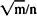

by Abraham Kandel
CRC Press, CRC Press LLC
ISBN: 084934297x Pub Date: 11/01/91
|
|
Fuzzy Expert Systems
by Abraham Kandel CRC Press, CRC Press LLC ISBN: 084934297x Pub Date: 11/01/91 |
| Previous | Table of Contents | Next |
which measure pointwise violations of subsethood mA ≤ mB and supersethood mB ≥ mA, as discussed in Section III.
We shall briefly illustrate fuzzy-entropy minimization by metric FAMs that are designed to minimize a Lyapunov or “energy” function. The neural network literature is too vast to survey here and the workings of all but the simplest nets are too lengthy to detail. The interested reader should consult the monumental works of Grossberg20-22 and Kohonen32,33 for the serious study of neural networks, brains, and minds as programmable dynamic systems.
The easiest hetero-/autoassociative metric FAM to study is Kohonen’s optimal linear associative memory (OLAM).33 The OLAM is not a dynamic associative memory. All recall takes place in one synchronous step. Therefore, the OLAM is not a fuzzy entropy minimizer. It is, however, optimal in the least-squares (12) sense, and simple OLAMs can be constructed with pen and paper. We present it because it illustrates the properties of most metric associative memories and because it is the metric analogue of Theorems 1 and 2.
The OLAM stores m-many associations (A1,B1), . . . , (Am,Bm) in an n-by-p matrix M. Ai can be any real n-vector and Bi any real p-vector, not necessarily points in In and Ip. B is recalled given A if B = AM. Then recall (decoding) is a linear procedure. We demand two things from M. First, Ai M = Bi must hold for all i; Ai must perfectly recall its associated output Bi. Second, if some input A is closer to Ai than to all other Aj, then the output B = AM must be closer to Bi than to all other Bj. We seek a parallel distributed construction (encoding) procedure for such an optimal M.
To simplify notation, we rewrite the recall equation in matrix notation as B = AM. Here AT = [A1T| . . . |AmT] and BT = [B1T| . . . [BmT] are rectangular matrices. Ai is the ith row of the m-by-n matrix A. Bi is the ith row of the m-by-p matrix B. Norm(M) is the matrix norm of M compatible with the vector 12 (Euclidean) norm, the square root of Trace(MTM). We search the space of n-by-p real matrices to find that matrix M that minimizes Norm(B - AM). In the special case where n = m = p and A-1, the matrix inverse of A, exists, the optimal M is simply A-1B. In general, the solution is M = A*B, where A* is the Moore-Penrose pseudo-inverse of A. The bidirectional37 OLAM for recalling A given B is M* = B*A. The OLAM autoassociation matrix is M = A*A. A* uniquely exists for every matrix and a variety of recursive procedures exist to calculate it. The popular Greville’s algorithm for computing A* enjoys an equivalence to the time-independent Kalman filter,30 which underlies the practical power of the OLAM.
The memory capacity of the OLAM M is m < n. No more associations can be stored in M and reliably recalled than the dimensionality of the pattern space — a result true for most associative memories.1 Kohonen33 has shown that the OLAM attenuates/amplifies circularly symmetric noise according to , again reflecting the capacity bound. The autoassociative OLAM A*A is an optimal projection operator. The OLAM uniquely decomposes any pattern P into signal and noise Ps + Pn in a Hilbert-space version of Pythagoras’s theorem. P is the hypotenuse, Ps and Pn are the orthogonal legs. A*A projects P onto the subspace spanned by the patterns in A. The projection Ps = P A*A is the best signal estimate (best “prediction”) of P given A. Pn = P - Ps is the orthogonal novelty (“error”) in P. I - A*A is a novelty filter, where I is the n-by-n identity matrix. It optimally measures what is new or unexplained in P with respect to what is known (stored in A). These properties rest on the properties of Fourier coefficients in Hilbert space and are thus structurally analogous to linear regression properties of uniquely decomposing a data vector into a best prediction vector and residual or error vector. Some neural net critics have even claimed that associative memory theory is disguised regression. The fundamental difference is that regression models assume a functional dependency between A and B, namely, B = cA + e, and attribute all disparities between B and cA to some stochastic error e. On the contrary, in associative memory theory we assume no dependencies between the arbitrary data vectors or sets Ai and Bi. We instead seek encoding structures, often matrices, that form an association between them in some appropriate way.
| Previous | Table of Contents | Next |